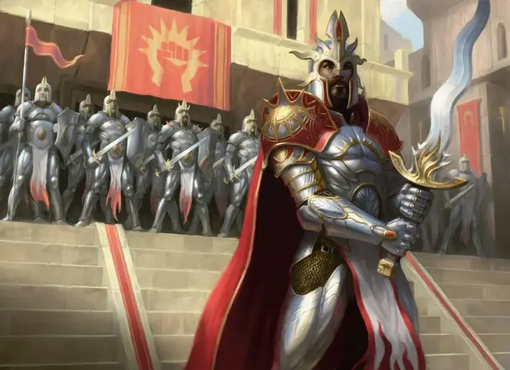

Огненный кулак
Firefist
Средний Гуманоид (Любая раса), законно-добрый

Класс Доспеха 18 (латы)
Хиты 117 (18к8 + 36)
Скорость 30 футов
| мод | спас | ||
|---|---|---|---|
| СИЛ | 16 | +3 | +3 |
| ЛОВ | 10 | +0 | +0 |
| ТЕЛ | 14 | +2 | +5 |
| мод | спас | ||
|---|---|---|---|
| ИНТ | 11 | +0 | +0 |
| МДР | 17 | +3 | +6 |
| ХАР | 13 | +1 | +1 |
Навыки Запугивание +4, Религия +3
Чувства пассивное Восприятие 13
Языки один любой язык (обычно Общий)
Опасность 7 (2900 опыта)
Бонус мастерства +3
Особенности
Использование заклинаний. Огненный кулак является заклинателем Боросов 9-го уровня. Его базовой характеристикой заклинания является Мудрость (Сл спасброска от заклинаний 14, +6 к попаданию атаками заклинаниями). У него подготовлены следующие заклинания жреца:
• Заговоры (неограниченно): огненный снаряд [fire bolt], свет [light], священное пламя [sacred flame], уход за умирающим [spare the dying].
• 1 уровень (4 ячейки): направляющий снаряд [guiding bolt], лечащее слово [healing word], героизм [heroism], щит веры [shield of faith]
• 2 уровень (3 ячейки): малое восстановление [lesser restoration], палящий луч [scorching ray]
• 3 уровень (3 ячейки): ослепляющая кара [blinding smite], мантия крестоносца [crusader's mantle], возрождение [revivify]
• 4 уровень (3 ячейки): изгнание [banishment], огненная стена [wall of fire]
• 5 уровень (1 ячейка): небесный огонь [flame strike]
Действия
Мультиатака. Огненный кулак совершает две атаки Двуручным мечом.
Двуручный меч. . Рукопашная атака оружием: +6 к попаданию, досягаемость 5 фт., одна цель. Попадание: 10 (2к6 + 3) рубящего урона.
Описание
Огненные кулаки Боросов сочетают в себе мощную магию с непревзойденными боевыми способностями, вдохновляя всех, кто служит вместе с ними. Они часто служат связующим звеном между Легионом Боросов и ангельскими лидерами.